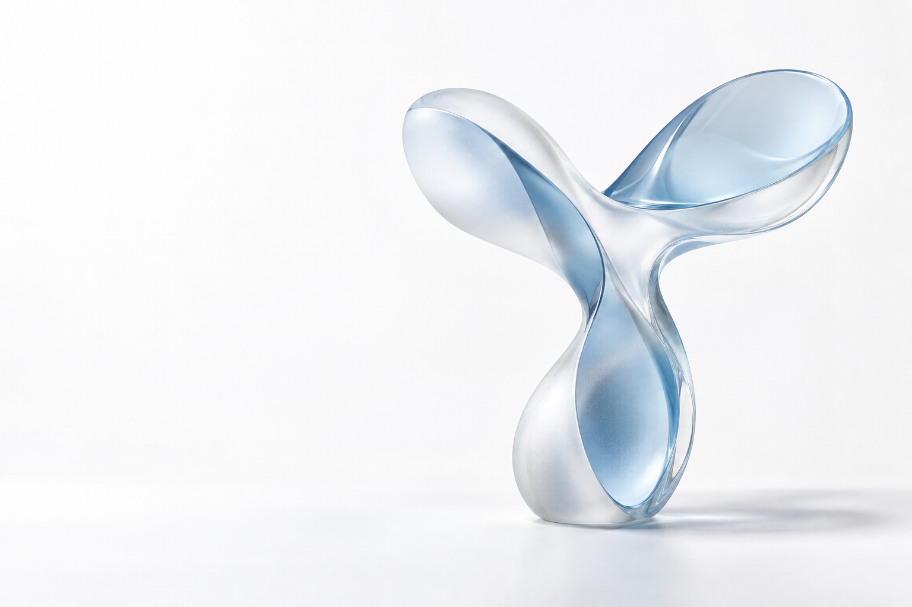
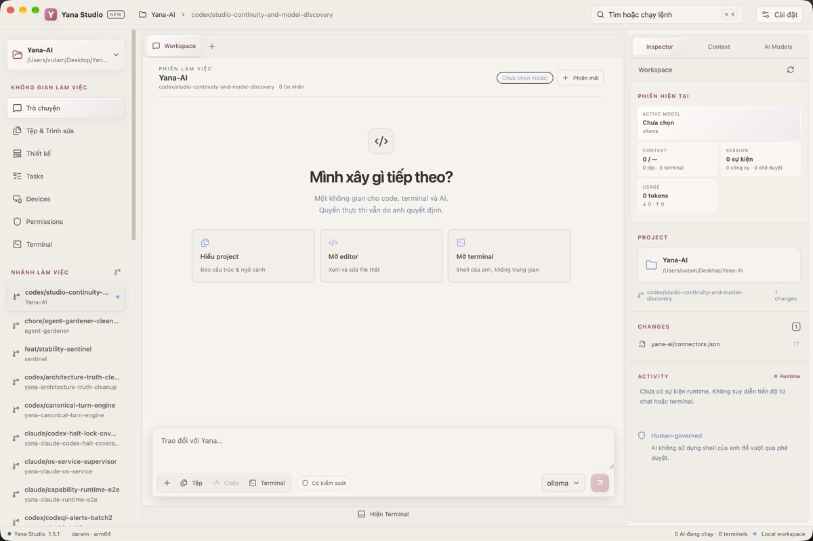

Grant the right capability.
Agents can call only tools and paths within declared scope. A model response cannot expand its own authority.
Explore Governance ↗
AI works. You hold authority.
YANA · HUMAN-GOVERNED AI
Yana connects models, tools and devices through one inspectable system — where every action remains governed by a person.

YOUR YANA JOURNEY
Follow Yana from its first terminal conversation to a system you can inspect.
YANA IN 20 SECONDS
A model request does not become a command by itself. Yana puts authority, scoped capabilities and evidence in the same flow.
Explore the full architecture ↗Proposes an action and names the capability.
Checks authority, scope and policy.
Approves when an action needs a decision.
Runs within scope; keeps the outcome inspectable.
Models can change. Execution authority is defined outside the model.
UP NEXTWhere did Yana begin?↓FROM TERMINAL TO RUNTIME
That was its first way of working: talk to AI where the work already happens. As AI needed to reach files and tools, Yana grew a runtime to govern those actions. Studio came later as a visual surface for the same workflow.
Explore Yana Runtime ↗UP NEXTFrom the terminal to the ecosystem↓$ yana-rt chat
you › Inspect this project before editing.
yana › I will read its structure and propose the next step.
CAPABILITY REQUEST → AUTHORITY CHECK
AN ECOSYSTEM · NOT A SINGLE APP
Yana is where AI, software tools and physical devices work under one principle: intelligence may change, but people retain final authority.
01 / YANA AI
Connect models, tools and files through one authority layer. A proposal becomes an action only when its capability is allowed.
Explore Yana AIThe model proposes an action and names the capability it needs.
02 / YANA STUDIO
Keep conversations, projects, files and terminal work in one desktop space. The interface makes the work and its permissions visible.
Explore Studio
Projects and files stay in one workspace with visible context.
03 / YANA WHEELBOT
Wheelbot is the ESP32-S3 robotics branch. Its published source defines the current technical boundary and development status.
Explore Wheelbot

CORE CAPABILITIES
Yana turns operating boundaries into steps that can be seen and inspected.
Agents can call only tools and paths within declared scope. A model response cannot expand its own authority.
Explore Governance ↗Requests pass through the authority layer. Execution pauses for human approval when a decision is required.
Explore Safety ↗Proposal, decision and outcome can be traced through the audit record and evidence receipt.
Explore Evidence ↗Cloud and local models connect through one orchestration layer; Yana and the user retain execution authority.
Explore Models ↗ARCHITECTURE · FROM PROPOSAL TO EXECUTION
Studio and other surfaces send work into the same system. TurnEngine, authority and execution tools each have a distinct role.
Read the technical architecture ↗The audit chain and evidence receipt record what happened. Wheelbot is a separate branch; its page states what has and has not been verified.
02 — INTERACTIVE DEMO
A model only makes a proposal. Yana's authority gate decides whether to allow it, ask a human, or deny it — and every outcome leads to inspectable evidence.
file.write · docs/website/demo.jsonInterface simulation. No command runs on your device.
EVIDENCE · INSPECTABLE
These mechanisms are grounded in the project. We do not use unverified numbers.
USE CASES
WHY YANA
Check authority through defined mechanisms.
Tie decisions to records and results.
Support local workflows when appropriate.
Change the intelligence source while keeping authority boundaries.
03 — WHAT IS PUBLIC TODAY
This site only presents products supported by real public evidence. Runtime, Governance, Agents, Models and Integrations are platform layers — not separate products.
Runtime, authority, guardrails, evidence and orchestration beneath every user surface.
Explore Yana AI ↗DESKTOP WORKSPACEA visual workspace for conversations, projects, files, terminals, models, connectors and execution permissions.
Explore Studio ↗PHYSICAL AIThe ESP32-S3 robotics branch, with its own public repository and clearly stated technical boundaries.
Explore Wheelbot ↗START WITH THE REAL SYSTEM
Explore the runtime, authority model and published product surfaces.